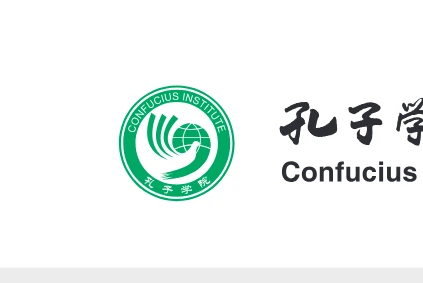
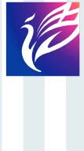

Оригинал
Русский
English
Қазақша
Пиньинь
孔子学院总部/国家汉办
Confucius Institute Headquarters (Hanban)
Штаб-квартира Институтов Конфуция (Ханьбань)
标准教程
STANDARD
COURSE
СТАНДАРТНЫЙ
КУРС
H
S
K
5
上
主编：
姜丽萍
LEADAUTHOR:Jiang Liping
Главный автор: Цзян Липин
编者:
刘畅、鲁江
AUTHORS: Liu Chang, Lu Jiang
Авторы: Лю Чан, Лу Цзян
北京语言大学出版社
BEIJING LANGUAGE AND CULTURE
UNIVERSITY PRESS
Издательство Пекинского университета
языка и культуры
练习册
Workbook
Рабочая тетрадь

